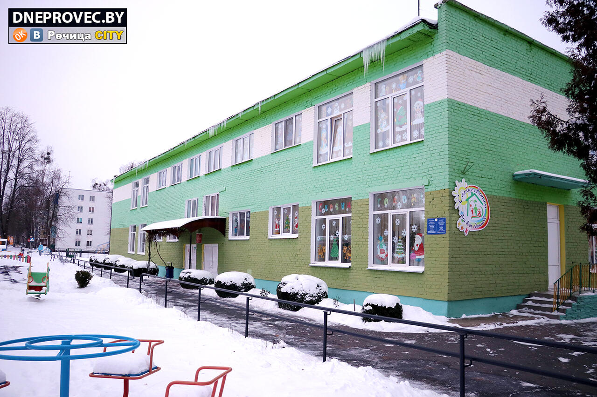

Прием специалистов (психолого-медико-педагогическая комиссия): по предварительной записи
Суббота, воскресенье: выходной
Руководство
Должность
Фамилия, имя, отчество
Директор центра
Старовойтова Людмила Олеговна
Председатель ПМПК (психолого-медико-педагогической комиссии)
В составе центра
Предварительная запись на консультацию и прохождение ПМПК осуществляется по телефону +375 2340 3 73 59.
Об учреждении

Основными задачами государственного учреждения образования «Речицкий районный центр коррекционно-развивающего обучения и реабилитации» являются:
Проведение комплексной диагностики психофизического развития детей для определения специальных условий получения образования.
Оказание коррекционно-педагогической и психологической помощи детям с особенностями психофизического развития в возрасте от 0 до 18 лет.
Реализация индивидуальных программ реабилитации, социальная адаптация и интеграция детей в общество.
Организация обучения на дому, консультирование родителей (законных представителей) и педагогов по вопросам специального образования.
Дополнительные ресурсы
Вышестоящая организация: Отдел образования Речицкого районного исполнительного комитета
Телефон: +375 2340 6 56 31
Факс: +375 2340 6 56 31
E-mail: priemnoy-roo@rechitsa-edu.gov.by
Время работы отдела образования:
Понедельник-пятница: 8:00 – 13:00, 14:00 – 17:30
Предпраздничные дни: 8:00 – 13:00, 14:00 – 16:30
Важно: ЦКРОиР осуществляет психолого-педагогическое сопровождение детей с особенностями развития, не посещающих дошкольные учреждения, а также оказывает методическую помощь педагогическим работникам.